Ultraman Event
Guide in Ragnarok X Next Generation (ROX)
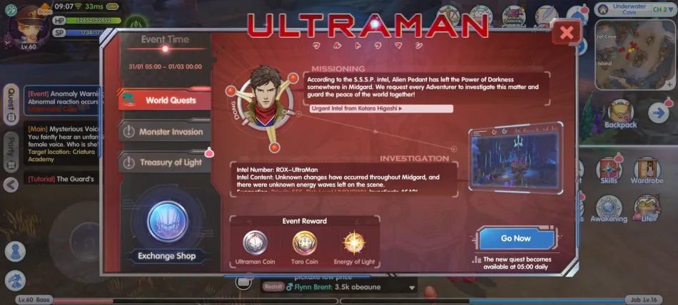
Ragnarok X Next Generation (ROX), the popular MMORPG, is proud to announce a brand-new collaboration event with the iconic Japanese TV series, Ultraman. This exciting event allows adventurers to explore the game with an Ultraman-themed twist, as they battle against alien enemies like Adacic and Pedant, and team up with Ultraman heroes to go on an epic adventure.
The event will start from January 31 to March 1, 2023 @ 00:00AM (29 days duration).
Quick Guide
For a quick reference of the Ultraman guide, here’s a summary:
| EVENT | HOW TO |
|---|---|
| What to Expect in this Event | Sorry for the very long post, to summarize everything we just put important things you need to do and expect on this event: Doing the World Quest, Monster Invasion, Burning Odin Blessing, and Ultraman Kingdom Pass daily will allow you to achieve the following (free-to-play players): – You will have enough Ultraman and Taro Coins to redeem the Kotari/Maya costume set, Blue Card selection card, all rewards for Kingdom Pass level 80 and 90 tickets for Gacha. – You can get all of A, B and SP rewards from Normal Gacha using 90 tickets – Extra coins of hunting abandoned Adacic boss monster |
| Event 1: World Quest | You will get a daily quest where you have to find the location of the image provided. Those having problem, must find the “Gold shinning shimmering object” near the area and investigate it. (Note: This quest has no auto path finding) After investigating, either a boss or quiz question will appear. If boss, you and other players can kill the boss to get additional drop rewards. (Not sure if this include on the daily event-material capped) For quiz, nothing really special if your answer is right or wrong. You’ll get the same rewards daily of: – 30 x Ultraman Coin – 10 x Taro Coin – 150 x Energy of Light For the whole duration of the event, you can get up to 4,350 EXP (Energy of Light), means you can get up to 21 levels on Ultraman Kingdom Pass. Total mats you can get at the end of the event (29th day): – 870 x Ultraman Coin – 290 x Taro Coin – 4,350 x Energy of Light |
| Event 2: Monster Invasion | You must come to the Ultraman Instance on time starting 12:05 Noon (Server Time) or 1:05PM (Manila, Philippine Time). The boss will appear every hour and the last one will be on 10:05 PM (Server Time) or 11:05PM (Manila, Philippine Time). – Once in the instance, immediately proceed to lower left of the map to hit the boss. – Get the Ultra Badge to get higher score, follow the proximity meter. – Follow the phases in this guide to earn score effectively. Aim to get 50,000 Points to get the full rewards (This score is doubled when the boss is defeated making it 100,000 Points): There is no limit of entering the instance, you can try many times if you fail to get higher score. For the whole duration of the event (29 days), you’ll get a total of: – 1,740 x Ultraman Coin – 870 x Taro Coin – 29 x 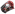 Ticket of Life |
| Event 3: Burning Odin Blessings | There is capped in burning Odin blessing with monsters. Up to 60 Ultraman Coin Up to 30 Taro Coin Up to 360 Energy of Light You can use up to 2,000 Odin Blessing to max out the event item. The maximum Energy of Light you can get from Odin Blessing is 10,440 EXP (Energy of Light). Meaning you can get up to level 52 in Kingdom Pass by just doing the daily Odin burn. Here are the total event-mats you can get for 29 days: – 1,740 x Ultraman Coin – 870 x Taro Coin – 10,440 x Energy of Light |
| Event 4: Ultraman Kingdom Pass |
The free-to-play EXP you can earn from daily quest and challenge quest is up to 7,725  EXP only.
Means, you can get up to 38 levels doing the quest.
The remaining, you can get it from Odin Burn blessing (55 levels).
The highlight rewards on Ultraman Kingdom Pass are the EXP only.
Means, you can get up to 38 levels doing the quest.
The remaining, you can get it from Odin Burn blessing (55 levels).
The highlight rewards on Ultraman Kingdom Pass are the  Ultraman Selection Album.
Total Energy of Light from different sources, up to 22,515 EXP (Energy of Light) or 112 KP level:
– Up to 7,725 EXP from Ultraman Kingdom Pass
– Up to 4,350 EXP from daily World Quest
– Up to 10,440 EXP from Burning Odin Blessings Ultraman Selection Album.
Total Energy of Light from different sources, up to 22,515 EXP (Energy of Light) or 112 KP level:
– Up to 7,725 EXP from Ultraman Kingdom Pass
– Up to 4,350 EXP from daily World Quest
– Up to 10,440 EXP from Burning Odin Blessings
|
| Event 5: Ultraman Gacha | IMPORTANT: For f2p, you can get all of the rewards in the Normal Gacha including the SP, A and B Rewards, you just need at least 90 tickets as long as you do the 10 x pull. These tickets can be obtained for free on Ultraman Instance and you will have enough coins to purchase the 90 tickets on the Ultraman exchange NPC. Just make sure the set of pool rewards on the Normal Gacha is the one you like (Reroll if you don’t like it). There are two types of gacha, the Normal Gacha and Suprise Attack Gacha. The Normal Gacha, only has 90 prize pool, meaning you only need 90 Tickets to get all of the rewards including the A, B and SP Rewards. For the Surprise Attack Gacha, there are 321 prize pool and it is shared for everyone in the server. Only the first 6 lucky winner will get the highlight rewards, when it is already sold out there is no point of drawing. You have to wait for the next refresh to participate. Those who are lucky to get Rewards B and up will also have a chance to bring home iPhone 14 Pro Max (fully paid), see our other article for more info. Participants will get an eye headgear, 7-day Scary laughter (7 days) |
| Event 6: Exchange NPC |
For the whole duration of the event, you’ll get a total of 4,940  Ultraman Coin and 2,030 Ultraman Coin and 2,030  Taro Coin (That’s if you have no absence and able to get the full rewards on Ultraman instance).
With those coins, you can get the following items:
– 1 x Ultraman Selection Album (Blue Cards)
– 1 x Higashi/Maya Outfit set
– 90 x Ticket of Life
And still has 3,200 Ultraman Coin and 430 Taro Coin to spent on other mats.
To get Seal of Light, you have to dismantle Ultraman costumes. You can get up to 5 to 10 Seal of Light per costume, see below for the full lists. Taro Coin (That’s if you have no absence and able to get the full rewards on Ultraman instance).
With those coins, you can get the following items:
– 1 x Ultraman Selection Album (Blue Cards)
– 1 x Higashi/Maya Outfit set
– 90 x Ticket of Life
And still has 3,200 Ultraman Coin and 430 Taro Coin to spent on other mats.
To get Seal of Light, you have to dismantle Ultraman costumes. You can get up to 5 to 10 Seal of Light per costume, see below for the full lists.
|
Costumes and Cards
Here are the costume set, and cards based on Ultraman that you can get during the event. One of each A, B and SP Rewards from gacha costume can be get for FREE using the 90 tickets trick.| COSTUMES | PREVIEW |
|---|---|
|
Kotari Higashi’s Hairstyle 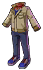 Kotari Higashi’s Outfit |
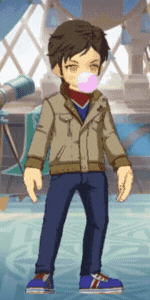
Get this from Exchange Shop for 40 Ultraman Coins and 300 Taro Coins. |
|
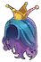 Princess Maya’s Hairstyle 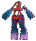 Princess Maya’s Outfit |
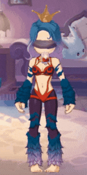 Get this from Exchange Shop for 40 Ultraman Coins and 300 Taro Coins. |
|
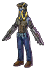 Alien Adacic Suit (Complete Set) |
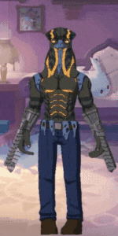 You can get this from Ultraman Gacha from B Rewards. |
|
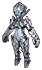 Bemular Suit (Complete Set) |
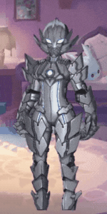 You can get this from Ultraman Gacha from A Rewards. |
|
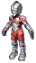 Ultraman Suit (Complete Set) |
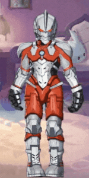 You can get this from Ultraman Gacha from A Rewards. |
|
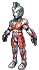 Ultraman Ace Suit (Complete Set) |
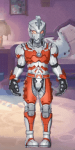 You can get this from Ultraman Gacha from A Rewards. |
|
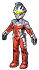 Ultraman Seven Suit (Complete Set) |
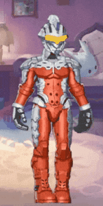 You can get this from Exchange shop for 40 Seal of Light or from Ultraman Gacha from SP Rewards. |
|
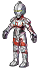 Ultraman Zoffy Suit (Complete Set) |
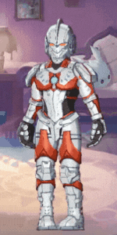 You can get this from Exchange shop for 40 Seal of Light or from Ultraman Gacha from SP Rewards. |
|
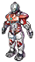 Ultraman Jack Suit (Complete Set) |
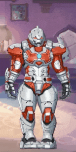 You can get this from Exchange shop for 40 Seal of Light or from Ultraman Gacha from SP Rewards. |
|
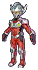 Ultraman Taro Suit (Complete Set) |
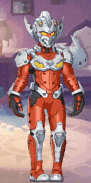 Get this from Ultraman Kingdom Pass at Level 80 VIP rewards. |
|
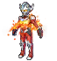 Ultraman Taro Suit (Flame) (Complete Set) |
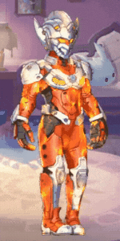 You can get this from Ultraman Gacha from Surprised Assault SP Rewards. |
|
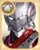 Ultraman Card (Gold Armor Card) |
Final P.DMG Reduction +25% The effect when equipping First Ultraman Card, Ultraman Taro Card, Alien Pedant Card, and Alien Adacic Card at the same time: There is a 3% chance of getting a buff when using a normal attack or dealing skill damage, increasing the damage dealt against all MVPs, Minis, and Bosses by 20%. Lasts 10 seconds with a 20-second cooldown. You can get this from Ultraman Gacha from A Rewards or from Event Exchange for 8,000 Ultraman Coin and 4,000 Taro Coin. |
|
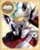 Ultraman Taro Card (Gold Cloak Card) |
Final M.DMG Reduction +25% With the same set effect and source from Ultraman Card. |
|
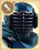 Alien Pedant Card (Gold Weapon Card) |
Bonus DMG to Medium monsters +25% Bonus DMG to Small monsters +25% With the same set effect and source from Ultraman Card. |
|
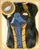 Alien Adacic Card (Gold Headgear Card) |
P.Lifesteal +25% M.Lifesteal +25% With the same set effect and source from Ultraman Card. |
|
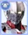 Ultraman Zoffy Card (Blue Armor Card) |
Final P.DMG Reduction +15% The effect when equipping Ultraman Zoffy Card, Ultraman Seven Card, Ultraman Jack Card, and Ultraman Ace Card at the same time: There is a 3% chance of getting a buff when using a normal attack or dealing skill damage, increasing the damage dealt against normal monsters by 20%. Lasts 10 seconds with a 20-second cooldown. You can get this from Ultraman Gacha from B Rewards or from Event Exchange for 800 Ultraman Coin and 400 Taro Coin. |
|
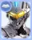 Ultraman Seven Card (Blue Cloak Card) |
Final M.DMG Reduction +15% With the same set effect and source from Ultraman Zoffy Card. |
|
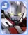 Ultraman Jack Card (Blue Shoes Card) |
Final P.DMG Reduction +7.5% Final M.DMG Reduction +7.5% With the same set effect and source from Ultraman Zoffy Card. |
|
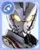 Ultraman Ace Card (Blue Accessory Card) |
P.ATK +15% M.ATK +15% With the same set effect and source from Ultraman Zoffy Card. |